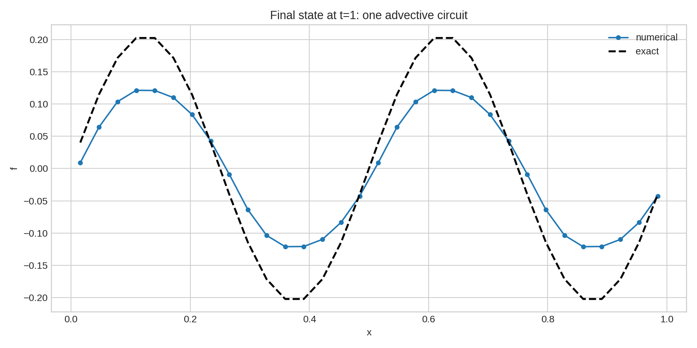
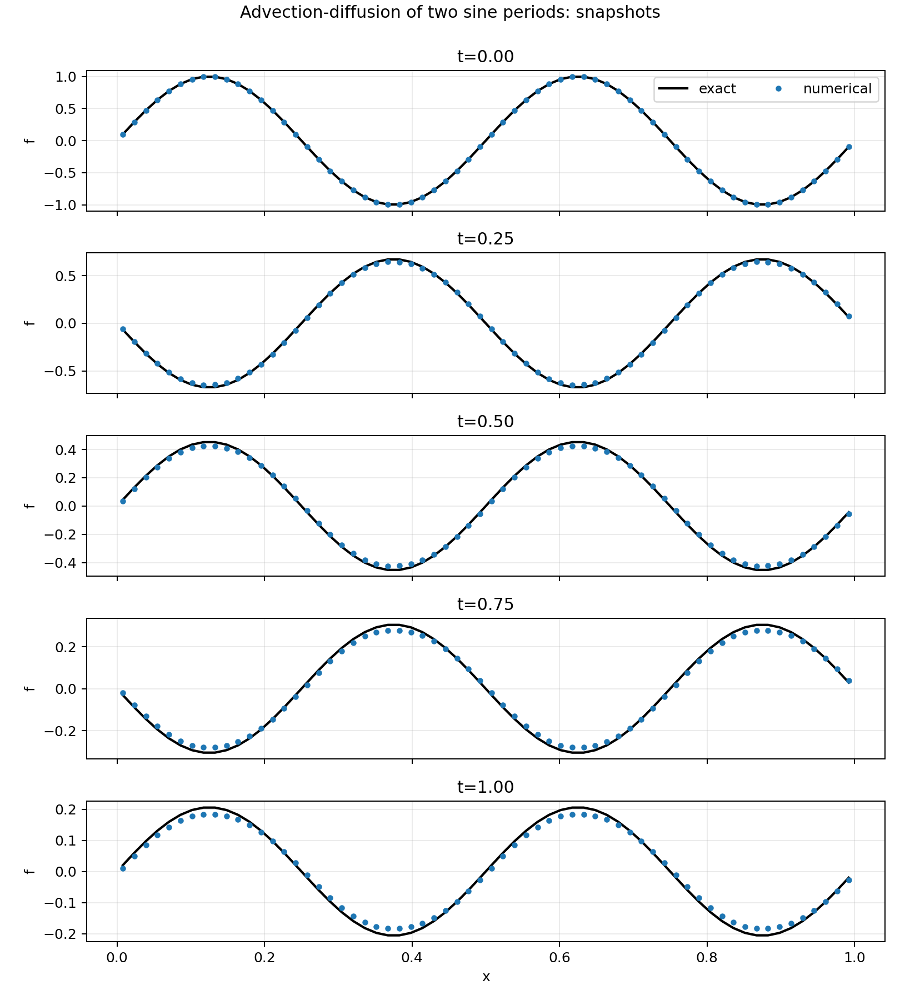
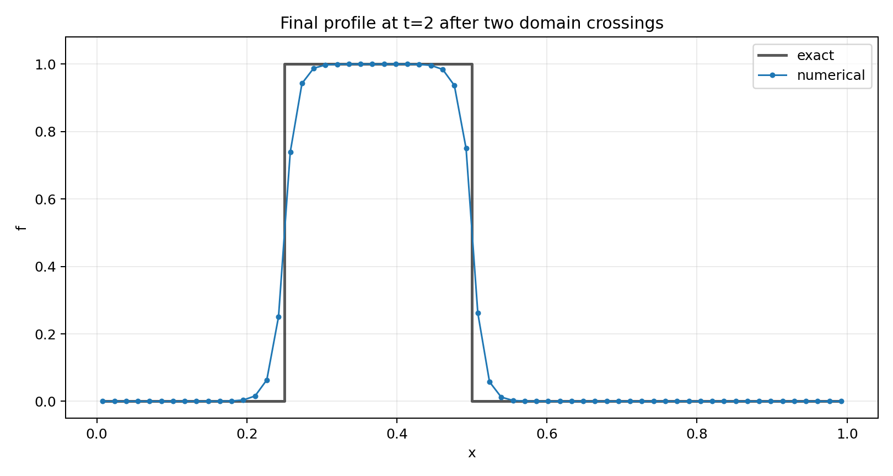
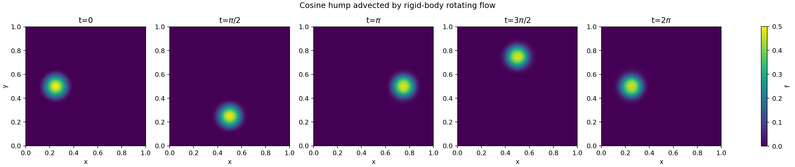
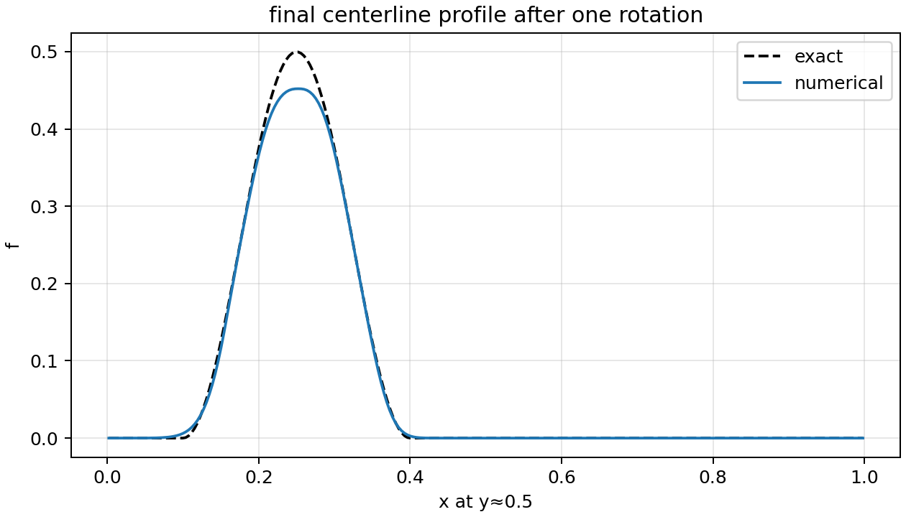
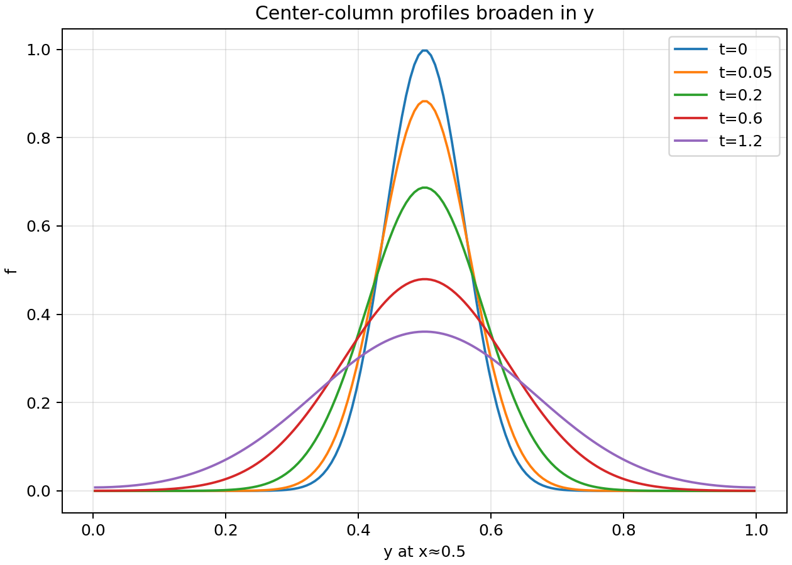
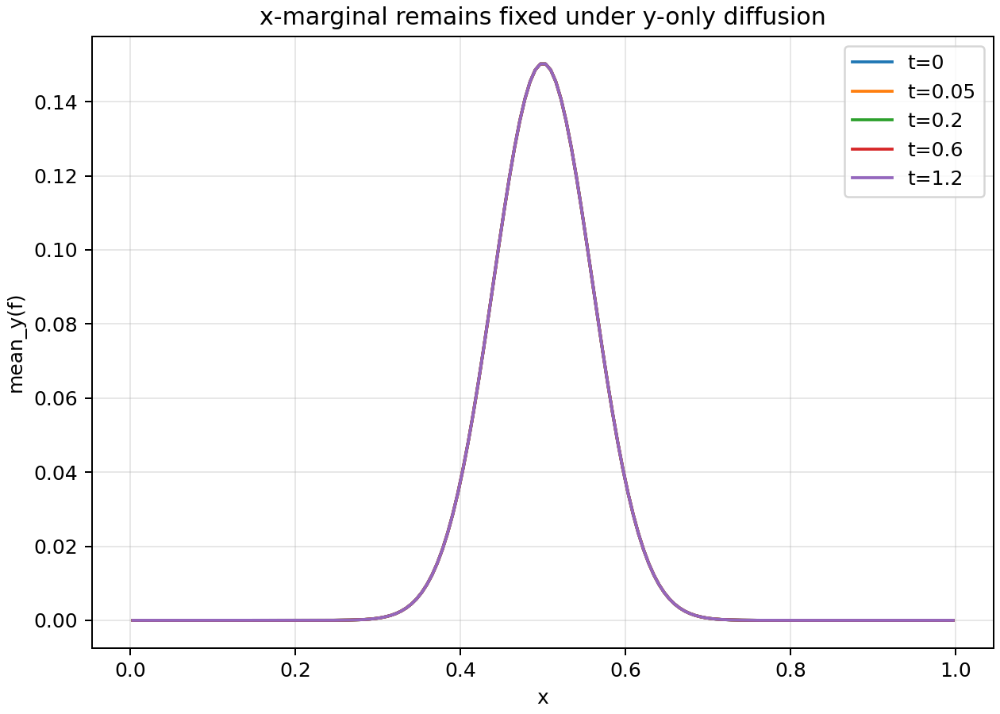

Research note · Numerical methods
The Advection-Diffusion Equation
In this numerics deep dive we look at a fundamental equation of mathematical physics: the advection-diffusion equation.
Corresponding GitHub Repository
In this numerics deep dive we look at a fundamental equation of mathematical physics: the advection-diffusion equation. This equation appears in a diverse variety of applications, including fluid flow and kinetic physics. Several properties of this equations are discussed and some examples of using Lanyon to generate proofs and simulation results are shown.
The Theory
The advection-diffusion equation is a fundamental equation that describes the transport of a scalar field: the motion of the scalar is due to advection in a velocity field, and due to diffusion. The advection velocity and the diffusion tensor can either be specified or computed from other equations.
The advection-diffusion equation, despite its apparent simplicity, forms the backbone of many other complex systems. For example, in fluid flow the density and energy of the fluid advect with the fluid velocity, leading to extremely complex mixing processes that are often chaotic.
More interestingly, if we allow the flow and diffusion to be in phase-space (a higher-dimension space that combines both the spatial and momentum coordinates) then it can describe, with appropriate choices of advection velocities and diffusion tensors, kinetic physics. For example, the motion of matter under gravity (the Boltzmann equation), the path of charged particles in electromagnetic fields (the Vlasov-Maxwell equations), and plasma turbulence in magnetic confinement devices (the gyrokinetic equations) are all described by specialized forms of advection-diffusion equations.
For the purposes of this numerics deep dive we will look at the equation written in the form
$$ \frac{\partial f}{\partial t} + \nabla\cdot(\mathbf{u} f) = \nabla\cdot(\mathbf{D}\cdot\nabla f). $$In this equation \( \mathbf{u} \) is the advection velocity, \( \mathbf{D} \) is the diffusion tensor, and \( f(x,t) \) is the advected scalar quantity. We will assume that the advection velocity and diffusion tensor are specified as functions of space and time.
Properties of the Advection-Diffusion Equation
We will begin by deriving some important properties of this equation. One would want some or all these properties to be preserved by the numerical method we choose. A general approach to deriving properties of a large class of conservation laws is to first derive the weak form of the equation. We do this by multiplying by a smooth function \( w \) and integrating over an arbitrary volume \( \Omega \) to get, after using integration by parts,
$$ \int_\Omega w \frac{\partial f}{\partial t}\thinspace d\mathbf{x}^3 + \oint_{\partial\Omega} w \mathbf{n}\cdot (\mathbf{u} f - \mathbf{D}\cdot \nabla f) \thinspace ds - \int_\Omega \nabla w \cdot (\mathbf{u} f - \mathbf{D}\cdot \nabla f)\thinspace d\mathbf{x}^3 = 0. $$In a certain sense this weak form of the equation is more fundamental than the original partial differential equation (PDE) as it involves fewer derivatives, allowing for a broader class of solutions. For example, in the absence of any diffusion the weak form permits the propagation of shocks. The ability to capture shocks is critical for many applications. Specialized shock-capturing methods have been developed for such situations, and Lanyon uses such schemes by default.
The trick to proving properties is to choose different values of the weight function \( w \). We can prove, for example, by choosing \( w = 1 \) that the total amount of “stuff” in the control volume is conserved:
$$ \frac{d}{dt} \int_\Omega f d\mathbf{x}^3 + \oint_{\partial\Omega} \mathbf{n} \cdot (\mathbf{u} f - \mathbf{D}\cdot \nabla f)\thinspace ds = 0. $$This is a conservation law, that is, it says that the total integrated quantity in the volume \( \Omega \) can only change due to flux passing through the boundary \( \partial\Omega \).
We can derive another important property in the special case in which the flow velocity is incompressible, that is, when \( \nabla\cdot \mathbf{u} = 0 \). This incompressibility condition occurs very frequently in applications. For example, in most problems in phase-space (galactic dynamics, plasma physics, low-density fluid flows) the phase-space velocity is incompressible. We choose \( w = f \), that is, the solution itself as the test function. A little vector algebra shows that
$$ \frac{d}{dt}\int_\Omega \frac{1}{2}f^2 \thinspace d\mathbf{x}^3 + \oint_{\partial\Omega} \mathbf{n} \cdot (\mathbf{u} \frac{1}{2} f^2 - \mathbf{D}\cdot \nabla \frac{1}{2} f^2) \thinspace ds = -\int_\Omega (\nabla f \cdot \mathbf{D} \cdot \nabla f) \thinspace d\mathbf{x}^3. $$This expression shows that, under the condition of incompressibility, as long as \( \nabla f \cdot \mathbf{D} \cdot \nabla f > 0\) the \( L_2 \)-norm of the solution decays monotonically. Of course, the \( L_2 \)-norm will remain conserved if there is no diffusion. This condition for decay (or conservation) is satisfied if the diffusion tensor is positive semi-definite.
The monotonic decay of the \( L_2 \)-norm is important to preserve in a numerical scheme: it ensure that the scheme remains stable.
A final important property that we can show is that if initially the scalar quantity is positive, \( f(x,0) > 0 \), then it always remains positive, \( f(x,t) > 0 \). It is very hard for a numerical scheme to ensure this property, unfortunately.
In summary, the advection-diffusion equation conserves the quantity being advected, monotonically decays the \( L_2 \)-norm of the solution when the flow is incompressible and the diffusion tensor is positive semi-definite, and maintains positivity of the solution if initial conditions are positive. In constructing good numerical scheme we need to ensure that some or all of these properties are satisfied by the discrete scheme we construct. This is not always possible, and usually a balance must be found in accuracy of the scheme and its robustness properties: in general, the more accurate a scheme the less robust it is.
The Numerics
Now that we have studied a few properties of the advection-diffusion system we wish to discretize we can switch to constructing the discrete scheme. Notice that we have a time-dependent equations with first-order time-derivatives, and first and second-order spatial derivatives, including cross-derivative terms. Hence, Lanyon must:
-
Choose a computational grid or mesh that is appropriate for the problem we wish to solve. In this deep-dive Lanyon will assume simple, rectangular domains and so will use a uniform, rectangular mesh.
-
Once we choose the mesh, we use a discrete approximation to the spatial derivative terms that appear in the equation. For this, one needs to carefully consider where on the mesh to compute the various quantities that appear in our equation, and from this construct a discrete derivative operator of sufficient accuracy. The discrete derivative operators will be different, for example, if we use a curvilinear mesh or a triangular mesh.
-
Lanyon then needs to decide how to advance the solution in time: it will replace the time derivative with a discrete approximation and advance or march the solution forward in time using a ODE solver. We will of course need to prescribe initial conditions and apply the appropriate boundary conditions.
Each of these steps - mesh generation, constructing spatial discrete operators, and choosing a time-stepper - are complicated and impact the quality of the numerical solution Lanyon will obtain. Once it has made all these choices, executable proofs of correctness for various properties (certificates) are generated, for example using the Lean proof assistant language. Though Lanyon presently uses Lean as its default proof assistant, we intend to support other theorem-provers such as Rocq and Agda in the future. Not all properties of the continuous equations are inherited by the discrete scheme. Depending on the set of problems we wish to study, we may want to ensure some key properties of the continuous scheme are inherited by the discrete scheme.
In general, as described in The Theory section above, we will also find that there is a tradeoff between accuracy of the scheme and robustness. For example, a highly accurate scheme could violate positivity, or will develop spurious high-\( k \) modes when the spatial scales of the solution approach the grid spacing. In general, some form of regularization, for example, limiters or extra diffusion, may be needed to obtain a stable and useful solver.
For the purposes of this numerics deep-dive Lanyon will make the following choices:
-
It will choose a finite-volume method for the advective term, using upwinding to determine the numerical flux at each cell interface.
-
To prevent oscillations when the structures in the solution get comparable to the grid size (high-\( k \) modes) it will choose an appropriate limiter that ensures that such modes do not cause serious errors.
-
For the diffusion term Lanyon will choose a properly centered finite-difference scheme: recall that there is no preferred direction in diffusion and so one should not use upwinding here. There are subtle issues when the diffusion tensor is highly anisotropic. Further, analogous to problems with high-\( k \) modes, for diffusion terms other subtleties like thermodynamic consistency of the scheme arise. We shall address these topics later.
Lanyon uses a reconstruction approach to determine surface fluxes from both the advective and diffusive terms, and a special hierarchical selection to ensure robustness. At present, it does not correct for positivity violations or thermodynamic inconsistencies in the diffusion terms.
The Proofs
The complete sequence of steps to run Lanyon is described below. As part of the code generation process Lanyon produces formal proofs (e.g. in Lean) to check the correctness of various properties of the solvers it builds. Example proofs for the 1D, 2D and 3D advection-diffusion equations, and the generated C code, are available on the Lanyon GitHub repo.
As we describe in detail on GitHub, Lanyon takes less than three
minutes to generate all the Lean and C code. It creates nearly 10,000
lines of Lean and nearly 9,000 lines of C code. The Lean code proves
the correctness of our algorithms, and Lanyon will refuse to generate
C if the /verify step (see below) fails. Some examples of the Lean
definitions and theorems are listed below.
-
Example Definition: Lanyon generates the definition of the eigenvalues of the flux Jacobians. These eigenvalues need to be real. See the definition of hyperbolic PDEs in the Lanyon Formulary. For the advection equations the eigenvalues are simply the components of the flow velocity.
-
Example Theorem: Lanyon generates a theorem that shows that the $x$-direction advective flux is hyperbolic. In the same way, Lanyon will generate proofs that the $y$- and $z$-direction advective fluxes are also hyperbolic.
-
Other examples of theorems are those that show consistency of the diffusive flux in each direction, that the flux-jump relations (see) are satisfied in the $x$-direction. Many other theorems and definitions are provided, and one should consult the GitHub repo for more details.
The Results: Second-Order Methods
In this section we show a sequence of results for the advection-diffusion equation sytem in 1D and 2D. For each problem set we also give the prompts that we used in Lanyon to generate the code and simulation. In general, to construct a solver one needs to run three steps. These are:
-
Step 1: Run the
/specifycommand (see examples) to tell Lanyon what equation system you wish to solve, in which dimension. You can also add other details as desired. For more complex equation systems you may have to run the/deepthoughtcommand. An example of a generated DSL specification can be viewed on our Github repo. -
Step 2: Once Lanyon completes the specify step you should ensure that the generated specification is syntactically correct by running the
/verifycommand. This command takes no parameters. If the/verifycommand fails then you may need to rerun the/specifycommand with some variation, or use the/deepthoughtcommand. Lanyon will refuse to build the actual simulation code if/verifydoes not pass. -
Step 3 Once
/verifypasses, then you must run the/compilecommand. This takes no options and will produce the C code for the solver you specified in the/specifycommand. Examples of generated C kernels are on our Github.
Once these steps are completed, you then run the /simulate command,
describing in detail the specific simulation you want to run. Many
examples are given below.
1D Advection-Diffusion
For the first test we will build a 1D advection-diffusion solver. The prompt to Lanyon is:
/specify Create a 1D advection-diffusion solver
Note the simplicity of the prompt: you do not need to specify the
scheme, the limiter or any other parameters. Lanyon will choose
appropriate defaults for you. At this point you will see some messages
fly by, with a Lisp DSL fragment that describes the system of
equatiosn. Run /verify to ensure this fragment is syntactically
correct. Note that the /verify step does not check if the
equation or proofs of correctness are semantically
correct1. Semantic correctness is ensured by our sophisticated
RAG pipeline that embodies deep knowledge of physics and applied
mathematics. This meta-level checking is, in general, not 100%
foolproof as Lanyon has no way to know (especially in complex
situations) what exactly the user had in mind. Such capabilities
remain an active area of research for us.
Now, we are ready to run our first simulation! This is the problem of advecting two periods of a sine wave: the initial condition is $\sin(x)$ on a periodic domain, with an advection speed of $1.0$ and a constant diffusion coefficient of $0.01$.
/simulate Simulate the advection of two periods of a sin wave with advection velocity 1 and diffusion coefficient 0.01. Use 32 cells on a periodic domain.
That’s it! Lanyon now will create the simulation based on the verified C code and run it for you, producing a large amount of output, including diagnostics.

In the figure above the blue line is the solution computed by Lanyon: the scheme it chose here uses limiters and is run at a smaller CFL number, leading to some excessive numerical damping. The extra flattening of the tops of the waves is due to the limiters: use of higher-order methods with maxima/minima-preserving limiters will eliminate this issue, and we will explore this later in the Research Note.
However, we can run the same simulation on a finer grid:
/simulate Simulate the advection of two periods of a sin wave with advection velocity 1 and diffusion coefficient 0.01. Use 64 cells on a periodic domain.
With this higher resolution we now get a far less numerically damped solution as seen in the following figure

As a final test in 1D we will advect a square flat-top profile twice across a periodic domain:
/simulate Simulate the advection of a square flat-top, with unit height on a periodic domain. Set the diffusion to 0.0. Use 64 cells on a periodic domain.
This simulation checks the efficacy of the limiters (in this case the default min-mod limiter).

2D Advection-Diffusion
For this set of problems we will create a 2D advection-diffusion solver using the following simple prompt:
/specify Create a 2D advection-diffusion solver
Once the solver is created and we have run /verify and /compile, we
can run simulations. The first simulation we shall run is the
advection of a “cosine hump” in a rigid-body rotating flow. This flow
has flow-velocity given by
This represents a counter-clockwise rigid body rotation about $(x_c,y_c)=(1/2,1/2)$ with period $2\pi$. Hence, structures will perform a circular motion about $(x_c,y_c)$, returning to their original position at $t=2\pi$. We will choose the initial condition:
$$ f(x,y,0) = \frac{1}{4} \left[ 1 + \cos(\pi r) \right] $$where
$$ r(x,y) = \min(\sqrt{(x-x_0)^2 + (y-y_0)^2}, r_0)/r_0 $$The prompt we will give Lanyon is
/simulate Simulate 2D advection in a flow with x-velocity -y+1/2 and y-velocity x-1/2 on a domain that is unit length in each direction. Set diffusion to zero. Run till time of 2 pi. Use a “cosine hump” initial condition as described in https://ammar-hakim.org/sj/je/je12/je12-poisson-bracket.html#rigid-body-rotating-flow
Note a few features of this prompt: we are telling Lanyon the advection speed to use and pointing it to another webpage (or a paper) for the specific form of the initial conditions to use. The RAG pipeline will ensure the advection speed is correctly set and will attempt to use the initial conditions from the specified webpage.
The figures below show snapshots of the solutions and a lineout of the final and the exact solutions. Note that the limiter leads to some flattening of the maxima of the “cosine hump”.


We now illustrate the ability to specify an anisotropic diffusion coefficient using the following prompt to the simulate command:
/simulate Simulate 2D diffusion only along the Y-direction. Set advection velocity to zero. Start with a Gaussian initial condition in the center of a domain and use periodic boundary conditions.
This prompt will set a default diffusion coefficent in $y$-direction, and set the diffusion in $x$-direction to zero. The figures below show the lineout in the $y$- and $x$-directions. The anisotropic diffusion causes the Gaussian to diffuse only the $y$-direction, leaving the $x$-direction shape completely unchanged.


Conclusion
In this Research Note we have discussed a fundamental equation of mathematical physics: the advection-diffusion equation. We discussed some of the properties of the equation and describe a general technique for how to derive these properties in a systematic way. Using a second-order method we solved a number of problems in 1D and 2D. All Lanyon prompts were given, with sample simulation outputs.
We should mention that for linear smooth problems the types of methods that we used above are not the best ones possible. The presence of limiters adds more diffusion than is desirable. However, these limiters are essential for discontinous solutions, for example, the square flat-top. See the No Free-Lunch Principle. Going to higher-order methods, such as discontinous Galerkin schemes, helps, and we intend to explore this option in Lanyon (and update this Research Note when we do).
References and Footnotes
-
The reason why semantic correctness is hard (or impossible) to check is that different users may mean different things by the same set of words. For example, when someone says “advection equation”, they may actually intend to include the diffusion term also. Another user may intend that this would not include the diffusive term. ↩︎